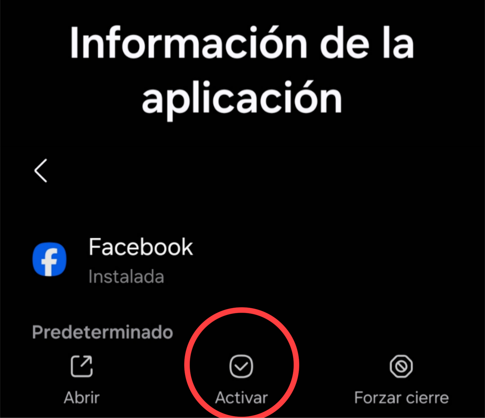
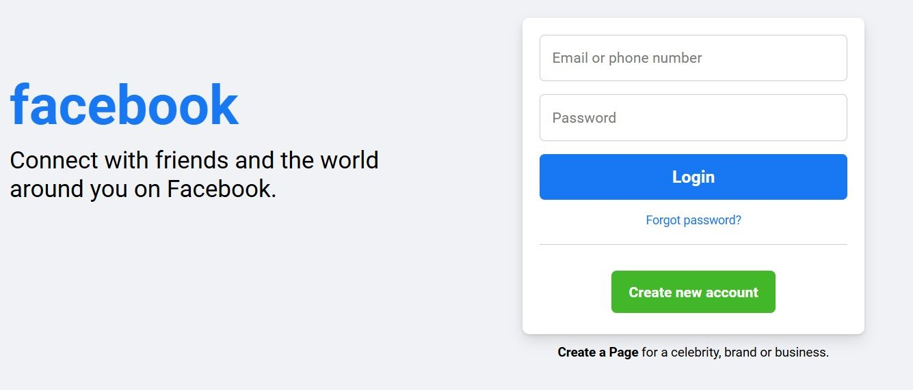
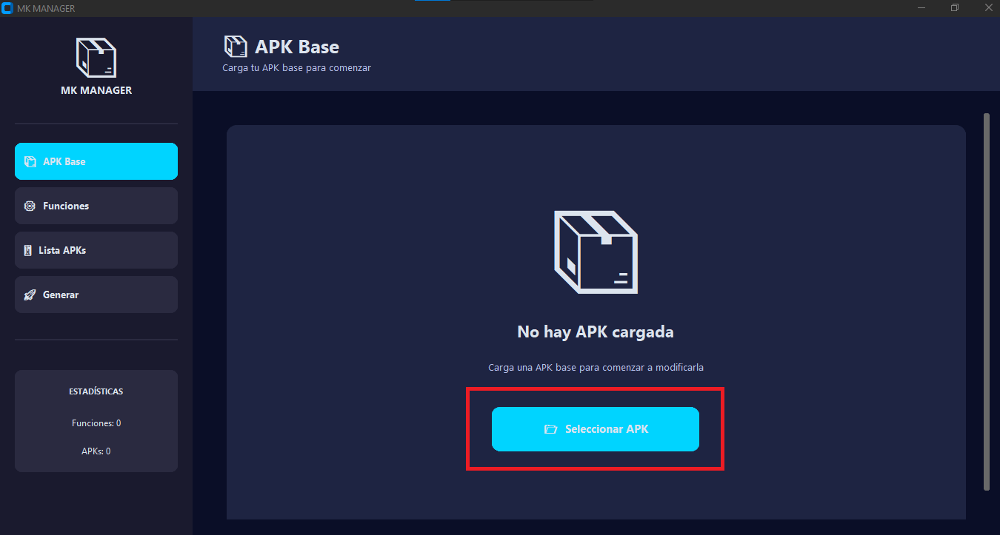
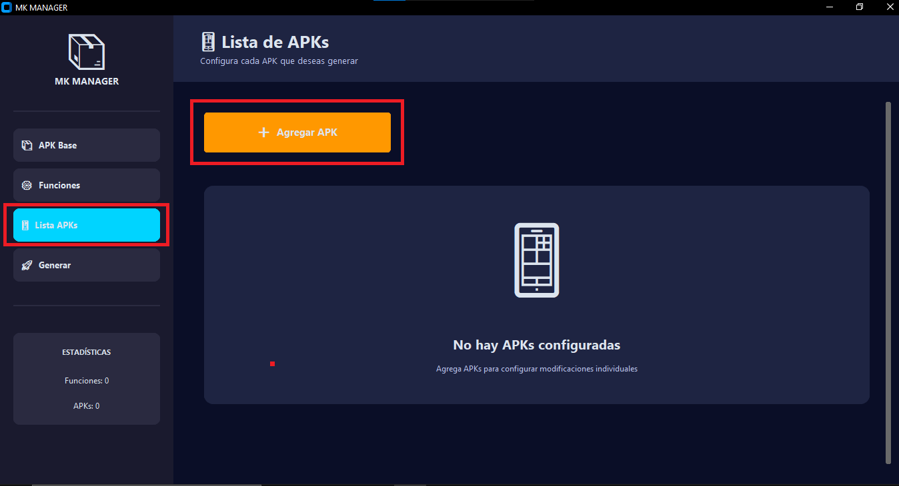

¿Cómo Instalar?
Sigue estos pasos para instalar tus modificaciones de manera rápida y segura
Opción 1
Mods Ya Modificados
Solo instalarOpción 2
Terrazas Personalizadas
Usando MK Manager¿Qué es esto?
Esta opción es para archivos que ya vienen listos. Solo los instalas y ya funcionan sin configuración adicional.
Desinstala Facebook temporalmente
Necesitas desinstalar o desactivar temporalmente la app de Facebook. Esto es solo para poder iniciar sesión dentro del juego. No te preocupes, podrás volver a instalarla después.
Abre el juego normalmente
Una vez desinstalada Facebook, abre el juego como siempre lo haces.
Inicia sesión en Chrome
El juego te redireccionará automáticamente a Chrome. Ahí solo inicia sesión con tu cuenta de Facebook.
¡Listo! Ya estás dentro
Chrome te regresará al juego automáticamente. ¡Ya estarás logueado! En este momento puedes volver a instalar o activar Facebook si quieres.
¡Felicidades! No tienes que hacer nada más. El mod ya está funcionando.
¿Qué es esto?
Esta opción es para quienes quieren usar sus propias terrazas, íconos, músicas o fondos de pelea. Necesitas modificar el APK usando MK Manager.
Video tutorial: Mira el video completo debajo para ver todo el proceso paso a paso.
Proceso Detallado
Seleccionar el APK
Abre MK Manager y carga el APK del juego que quieres modificar. Presiona el botón "Seleccionar APK" y busca el archivo en tu dispositivo.
Ir a la sección de funciones
Una vez cargado el APK, dirígete a la sección de "Funciones" o "Modificaciones". Ahí encontrarás todas las opciones disponibles para personalizar.
Rellenar los casilleros
Ahora es momento de personalizar. En cada casillero puedes elegir qué agregar o reemplazar:
- Ícono de la aplicación
- Terraza personalizada
- Música de fondo
- Fondos de batalla
- Y todo lo que quieras modificar
Subir tus imágenes o archivos
Para cada elemento que quieras modificar, sube el archivo correspondiente. Asegúrate de usar los formatos correctos (PNG para imágenes, MP3 para música, etc.).
Importante
Verifica que tus archivos tengan el tamaño y formato adecuados antes de subirlos.
Generar la aplicación
Una vez que hayas configurado todo, presiona el botón "Generar" o "Crear APK". MK Manager procesará todo y creará una nueva APK modificada con tus personalizaciones.
Este proceso puede tomar algunos minutos dependiendo del tamaño del APK y la cantidad de modificaciones.
Pasar la APK a tu teléfono
La aplicación generada queda guardada en tu computadora. Ahora solo necesitas transferirla a tu teléfono (por USB, correo, Drive, etc.), instalarla... ¡y listo!
¡Felicidades! Ya puedes usar tus terrazas y modificaciones personalizadas.